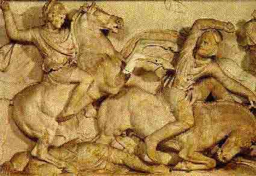

33 ALEXANDER YANG AGUNG 356 SM-323
SM

Alexander Yang Agung, penakluk yang kesohor dari dunia
silam itu dilahirkan di Pello tahun 356 SM, ibukota
Macedonia. Ayahnya, Raja Philip II dari Macedonia seorang
yang punya kesanggupan dan berpandangan jauh. Philip
memperbesar dan mengorganisir Angkatan Bersenjata Macedonia
dan mengubahnya menjadi kekuatan tempur yang bermutu tinggi.
Pertama kali penggunaan Angkatan Bersenjata pilihan ini
adalah waktu ia menaklukkan daerah sekitar hingga sampai ke
utara Yunani, kemudian berbalik ke selatan dan menaklukkan
hampir seluruh Yunani. Kemudian Philip membentuk federasi
kota-kota Yunani dan dia sendiri jadi pemimpinnya. Tatkala
dia lagi merancang rencana penyerangan terhadap Kekaisaran
Persia yang luas itu yang berada di sebelah timur
Yunani-bahkan penyerbuan sudah mulai terjadi di tahun 336
SM-Philip terbunul, tatkala usianya baru mencapai empat
puluh enam tahun.
Umur Alexander baru dua puluh tahun tatkala ayahnya mati
tetapi tanpa kesulitan dia menggantikan naik tahta. Philip
dengan cermat jauhjauh hari sudah melakukan persiapan untuk
penggantinya dan si Alexander muda sudah punya pengetahuan
dan pengalaman kemiliteran yang lumayan. Dalam hal
pendidikan intelektual pun Philip tidak mengabaikannya. Guru
buat Alexander disediakan ayahnya seorang yang istimewa:
Aristoteles, seorang yang mungkin paling cendikiawan dan
filosof yang paling termasyhur di dunia masa itu.
Baik di Yunani maupun daerah-daerah belahan sebelah
utara, penduduk yang ditaklukkan Philip memandang kematian
Philip merupakan kesempatan bagus untuk menghalau dan
menumbangkan kekuasaan cengkeraman Macedonia. Tetapi, hanya
dalam tempo dua tahun sesudah naik tahta, Alexander sudah
mampu mengatasi kedua daerah itu. Sesudah itu perhatian
dialihkan ke Persia.
Selama dua ribu tahun bangsa Persia menguasai wilayah
yang amat luas, membentang mulai dari Laut Tengah hingga
India. Kendati Persia tidak lagi berada dalam puncak
kehebatannya, namun masih tetap merupakan lawan yang tangguh
dan disegani, kekaisaran yang paling luas, paling kuat dan
paling kaya di muka bumi.
Alexander melancarkan serangan pertamanya ke Persia tahun
334 SM. Karena dia harus menyisihkan sebagian pasukannya di
dalam negeri untuk memelihara dan mengawasi inilik Eropanya,
Alexander cuma punya 35 000 tentara yang menyertainya
tatkala dia melakukan petualangan berani matinya, suatu
jumlah kecil tak berarti jika dibandingkan dengan kekuatan
Angkatan Bersenjata Persia. Di samping sejumlah kemalangan
yang menimpanya, Alexander memenangkan serentetan kemenangan
dalam gempurannya terhadap pasukan Persia. Ada tiga faktor
yang menjadi sebab kemenangannya. Pertama, pasukan yang
ditinggalkan ayahandanya, Philip, betul-betul terlatih dan
terorganisir baik, lebih baik dari pasukan Persia. Kedua,
Alexander sendiri seorang panglima perang yang genius,
mungkin paling genius di sepanjang jaman. Ketiga, keberanian
Alexander sendiri. Meskipun dia memimpin tahap-tahap pertama
pertempuran belakang garis front, keputusan Alexander adalah
memimpin sendiri pasukan berkuda yang memberi pukulan
menentukan. Ini merupakan cara yang penuh resiko dan dia
sering terluka dalam pertempuran macam begini. Tetapi
pasukannya menyaksikan dengan mata kepala sendiri bahwa
Alexander betul-betul tidak kepalang tanggung menghadapi
bahaya dan tak mau membebankan risiko pada pundak orang
lain. Hal ini membawa akibat langsung dalam hal peningkatan
moral prajurit yang meyakinkan.
Pertama Alexander memimpin pasukannya menerjang Asia
Kecil, menghajar habis pasukan kecil Persia yang ditempatkan
di situ. Kemudian dia bergerak menuju utara Suriah,
menggilas pasukan besar Persia di kota Issus. Rampung ini
dia balik badan menyerbu arah selatan, dan sesudah terlibat
pertempuran berat dan sulit sepanjang tujuh bulan, dia
berhasil menaklukkan kota pulau Phoenicia Tyre yang kini
bernama Libanon. Tatkala Alexander sedang bertempur di Tyre,
dia terima pesan dari Raja Persia mengwarkan separo
kerajaannya buat Alexander asal saja Alexander bersedia
menyetujui perjanjian perdamaian. Salah seorang jendral
Alexander, Parmenio, mengganggap tawaran bagus dan layak
diterima. "Jika aku Alexander, tawaran itu kuterima." Apa
jawab Alexander? "Begitu pula aku, andaikata aku ini bernama
Parmenio."
Sesudah Tyre jatuh, Alexander meneruskan gerakannya ke
selatan. Gaza jatuh sesudah bertempur selama dua bulan.
Mesir menyerah tanpa pertempuran apa pun. Sesudah menduduki
Mesir, Alexander menetap sebentar sekedar memberi waktu
istirahat bagi prajurit-prajuritnya. Di negeri itu, kendati
umurnya baru dua puluh empat tahun, dia diberi anugerah
gelar Firaun dan dinobatkan sebagai dewa. Sesudah dirasa
cukup istirahat, Alexander dan pasukannya bergerak lagi
kembali ke daratan Asia, dan dalam pertempuran hidup-mati
yang menentukan di Arbela tahun 331 SM, dia sepenuhnya sudah
melumpuhkan sebagian terbesar balatentara Persia.
Sesudah kemenangan gemilang itu Alexander memboyong
tentaranya ke Babylon dan menerobos masuk ke kota-kota
Persia, Suso dan Persepolis. Raja Persia Darius III
(bukannya pendahulunya Darius Yang Agung) dibunuh oleh
opsir-opsirnya di tahun 330 SM untuk mencegahnya menyerah
kepada Alexander. Walau begitu, Alexander mengalahkan dan
membunuh pengganti Darius, dan dalam pertempuran selama tiga
tahun, dia sudah menaklukkan semua belahan timur negeri Iran
dan mendesak terus ke Asia Tengah.
Dengan segenap Kekaisaran Persia berada di bawah tclapak
kakinya, Alexander selayaknya ambil keputusan kembali pulang
ke negerinya dan mengorganisir daerah kekuasaannya. Tetapi,
haus penaklukannya tak tertahankan lagi, karena itu dia
meneruskan labrakannya ke Afganistan. Dari situ dia pimpin
tentaranya melintasi pegunungan Hindu Kush menuju India. Dia
peroleh serentetan kemenangan besar di bagian barat India
dan bermaksud melanjutkan serangannya ke bagian timur India.
Tetapi, pasukannya sudah lelah dan ngos-ngosan akibat
bertempur bertahun-tahun, dan menolak meneruskan penyerbuan.
Maka dengan ogah-ogahan Alexander kembali ke Persia.
Sesudah kembali ke Persia, Alexander menghabiskan waktu
sekitar setahun mengorganisir tentara dan wilayah kekaisaran
yang dikuasainya. Alexander dibesarkan bersama keyakinan
bahwa kebudayaan Yunani adalah satu-satunya kebudayaan yang
unggul dan jempol dan semua bangsa yang bukan Yunani tak
lain tak bukan adalah bangsa barbar. Keyakinan itu sudah
barangtentu tersebar meluas di seluruh alam pikiran dan
dunia Yunani, bahkan Aristoteles sendiri berpendapat begitu.
Tetapi, lepas dari keberhasilannya menumpas habis tentara
Persia, Alexander sadar bangsa Persia samasekali bukan
bangsa barbar, dan orang-orang Persia bisa saja sama mampu
dan sama pandai dengan orang Yunani. Oleh karena itu
Alexander mengandung niat untuk menggabung kedua kekaisaran
itu jadi satu, dan dijelmakannya dengan pembentukan gabungan
budaya dari kerajaan Graeco-Persia dengan dia sendiri tentu
saja berada di atas tampuk pimpinan penguasa. Sejauh yang
dapat kita pastikan, dia betul-betul berkehendak agar bangsa
Persia merupakan partner sederajat dengan bangsa Yunani dan
Macedonia. Dalam rangka melaksanakan rencana ini, dia
memasukkan banyak sekali orang Persia ke dalam Angkatan
Bersenjatanya. Dia juga mengadakan pesta apa yang disebutnya
"Perkawinan Barat dan Timur" di mana ribuan tentara
Macedonia secara resmi mengawini puteri-puteri Asia. Dia
sendiri, walaupun sudah mempersunting istri seorang gadis
bangsawan Asia sebelumnya, kawin lagi dengan puteri
Darius.
Gamblang sekali, Alexander bermaksud melakukan tambahan
penaklukan dengan Angkatan Bersenjata yang sudah diorganisir
kembali ini. Kita tahu, dia bennaksud menaklukkan Arabia,
dan mungkin juga wilayahwilayah yang terletak di belahan
utara Persia. Dan mungkin dia sudah punya rencana menduduki
India atau menyerbu Roma, Carthago dan bagian-bagian Laut
Tengah. Betapapun rencana itu sudah tersusun, yang jelas tak
ada penaklukan-penaklukan berikutnya lagi. Di awal bulan
Juni tahun 323 SM tatkala Alexander berada di Babylon,
tiba-tiba dia terserang demam dan dia meninggal dunia
sepuluh hari kemudian. Saat itu umurnya belum lagi mencapai
tiga puluh tiga tahun.
Alexander tidak menunjuk penggantinya, dan segera sesudah
dia tiada mulailah terjadi perebutan kekuasaan. Dalam
pergumulan ini, bundanya, istrinya, anak-anaknya semuanya
terbunuh. Kerajaannya dibagi diantara para jendralnya.
Karena Alexander mati dalam usia amat muda dan tak pernah
terkalahkan, banyak spekulasi apakah gerangan yang akan
terjadi andaikata usianya panjang. Apabila dia membawa
pasukannya menyerbu dan menaklukkan daerah-daerah sebelah
barat Laut Tengah, besar kemungkinan dia akan berhasil, dan
dalam hal ini seluruh sejarah Eropah Barat akan mengalami
perubahan besar-besaran. Tetapi spekulasi ini-betapapun
menariknya tak ada hubungannya dengan sukses-sukses
sesungguhnya yang sudah dicapainya.
Daerah Kekaisaran Alexander Yang Agung
Alexander mungkin seorang tokoh yang teramat dramatis
dalam sejarah, karier dan pribadinya tetap jadi sumber
kekaguman. Bukti-bukti kesuksesan kariernya cukup dramatis
dan berlusin dongeng bermunculan menyangkut namanya. Dan
jelas sekali sudah menjadi ambisinya menjadi pendekar dan
penakluk terbesar sepanjang jaman, dan tampaknya memang
layak dia peroleh julukan itu. Selaku pejuang individual,
pada dirinya tercakup kemampuan dan keberanian. Sebagai
seorang jenderal, dia teramat ulung, karena selama sebelas
tahun pertempuran, tak pernah barang sekali pun dia
kalah.
Berbarengan dengan itu, dia seorang intelektual yang
belajar di bawah asuhan Aristoteles dan menguasai
sajak-sajak Homer. Dalam hal merealisir gagasan bahwa bangsa
yang bukan Yunani tidaklah mesti bangsa barbar, jelas
menunjukkan bahwa pikirannya punya daya jangkau lebih jauh
ketimbang sebagian besar pemikir-pemikir Yunani saat
itu.
Tetapi, di lain pihak Alexander punya pandangan cupet.
Meski berulang kali dia menghadapi risiko dalam pertempuran,
dia tidak mempersiapkan penggantinya. Keteledoran inilah
yang menjadi penyebab begitu cepatnya kerajaannya hancur
berantakan sesudah dia tutup usia.
Alexander dianggap besar kemungkinan berwajah rupawan,
dan dia sering amat bermurah hati kepada musuh yang
dikalahkannya. Di lain pihak, dia juga seorang "egomaniac"
dan bertabiat kejam. Pada suatu peristiwa, dalam suatu
pertengkaran dalam keadaan slebor, dia membunuh teman
akrabnya, Clertus, seorang yang pernah menyelamatkan
jiwanya.
Seperti halnya Napoleon dan Hitler, Alexander punya
pengaruh luar biasa terhadap generasinya. Masa pengaruhnya
yang singkat, lebih ringkas dari mereka, semata-mata
lantaran terbatasnya sarana untuk perjalanan kian-kemari
serta komunikasi pada saat itu m_ embatasi dan memperkecil
pengaruhnya terhadap dunia.
Dalam jangka panjang, pengaruh terpenting dari penaklukan
yang dilakukan Alexander adalah mendekatkan kebudayaan
Yunani dengan Timur Tengah, sehingga masing-masing mendapat
faedah untuk menambah dan mempertinggi kebudayaan
masing-masing. Selama dan segera sesudah karier Alexander,
kebudayaan Yunani dengan cepat tersebar ke Iran,
Mesopotamia, Suriah, Yudea, dan Mesir. Sebelum Alexander,
kebudayaan Yunani memang sudah merasuk ke daerah-daerah ini
tetapi
dengan lambat sekali. Juga, Alexander menyebarkan
pengaruh kebudayaan Yunani ke India dan Asia Tengah, daerah
yang belum terjamah sebelumnya. Tetapi, pengaruh kultural
bukanlah berarti hanya berlaku sepihak dan satu jurusan.
Dalam masa abad Hellenistik (abad-abad segera sesudah
langkah-langkah Alexander) gagasan-gagasan Timur-khususnya
gagasan keagamaan-tersebar ke dunia Yunani. Dengan
kebudayaan Hellenistik ini memang tampaknya Yunani dominan
tetapi sebenarnya pengaruh pikiran Timur besar sekali pada
saat itu mempengaruhi Roma.
Dalam jangka perjalanan kariernya, Alexander mendirikan
lebih dari dua puluh satu kota baru. Yang paling masyhur
dari semua itu adalah Alexandria (Iskandariah) di Mesir yang
dalam tempo cepat menjadi kota terkemuka di dunia dan
merupakan pusat budaya dan pendidikan yang kesohor.
Lain-lainnya seperti Herat dan Kandahan di Afganistan juga
berkembang jadi kota-kota penting.
Alexander, Napoleon, dan Hitler rasanya punya persamaan
dalam bobot pengaruhnya secara umum. Orang akan berkesan,
bagaimanapun juga, pengaruh kedua orang yang disebut
belakangan daya tahannya lebih pendek ketimbang Alexander.
Atas dasar itulah dia dapat tempat urutan sedikit lebih
atas.
Situs Web
- http://www.isidore-of-seville.com/Alexanderama.html
- http://www.isidore-of-seville.com/ImagesofAlexander/Maps.html
|